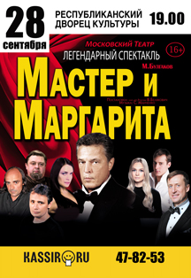

|
Афиша Саранск |
|
 МАСТЕР И МАРГАРИТА
28 СЕНТЯБРЯ 19:00
РЕСПУБЛИКАНСКИЙ ДВОРЕЦ КУЛЬТУРЫ ,
Пролетарская ул., 39, Саранск, Респ. Мордовия, 430000
Стоимость билетов: 500 — 1 500 Р.
Вообще «Мастер и Маргарита» не особо охотно поддается постановке. Не так то это просто – внести довольно крупное произведение в рамки спектакля. Задачу усложняют тесно-тонкое переплетение сюжетных линий, да и вообще роман сам по себе окутан мистическим ореолом. Главный режиссер театра на «Юго-Западе» Валерий Белякович не побоялся осуществить постановку (не хорошего романа) Михаила Булгакова. Необычно, оригинально, блестяще. Такие эмоции переполняли зрителей, когда на сцене разыгрывалось настоящее мистическое действо. И действительно удачно продуманные режиссером Валерием Беляковичем мизансцены, множество танцев, роскошные костюмы, лазерным шоу, мастерство художника по свету и блестящая игра актеров раздвинули тесную черноту и сделали, как казалось раньше, невозможное: самый знаменитый роман Булгакова наконец-то ожил на сцене. Причем театральная версия, поверьте, оказалась не менее впечатляющей и колдовски чарующей, чем сам оригинал. С помощью постановки и игры актеров, зрители как будто перенеслись в старую Москву 30-х годов, со всеми ее подробностями конкретного быта, атмосферой, красками и даже запахом.
Живая игра актеров, волшебные звуки музыки, буквально притягивают к себе и очаровывают.
Ждём тебя на концерте!
"МЕРТВЫЕ ДУШИ" Н.ГОГОЛЬ, КОМЕДИЯ
11 АПРЕЛЯ 17:00
РУССКИЙ ДРАМАТИЧЕСКИЙ ТЕАТР РЕСПУБЛИКИ МОРДОВИЯ - БОЛЬШОЙ ЗАЛ ,
430005, г. Саранск, ул. Советская, д. 60
Стоимость билетов: 250 — 350 Р.
«Мёртвые души» - это очередная финансовая афёра Чичикова, которой скоро уже 200 лет... Подумайте только, почти 200 лет назад нас предупредили, что есть такой вид мошенничества. И до сих пор это мошенническая схема работает! Почему? Всё просто: «По сей день среди нас живут пять характеров гоголевских помещиков. Слащавые паразиты маниловы, безалаберные панибраты ноздревы, сетующие торгашки коробочки, твердолобые грубияны собакевичи, патологические скряги плюшкины. Ни одного утешения! Мертвые души. Умирание человеческого в человеке.
Сегодня они живучи, как никогда. И конечно - главный мерзавец. Чичиков. Этакий мошенник, авантюрист, скупающий мертвые души. Точнее, по Гоголю, – «хозяин», «приобретатель», а по-простому - подлец ... »
|
Сейчас в киноtest |
| Все права защищены (c) 2021 | |